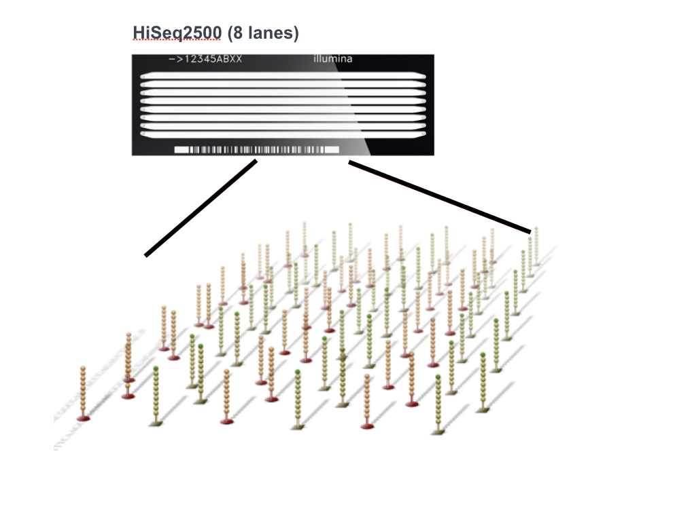

Illumina NGS 기술 상세
🔬 Illumina 시퀀싱 원리
⚙️ Bridge Amplification (클러스터 생성)
플로우셀 준비
: 고밀도 올리고뉴클레오타이드 어댑터
DNA 결합
: 단일 분자 DNA가 플로우셀 표면에 결합
브릿지 증폭
: PCR을 통해 수백만 개의 클론 클러스터 생성
선형화
: 역방향 가닥 제거, 정방향 가닥만 시퀀싱
🔬 Illumina 플로우셀 구조

Illumina 플로우셀 표면의 고밀도 올리고뉴클레오타이드 어댑터
수백만 개의 어댑터가 균등하게 분포되어 클러스터 형성의 기반 제공
💡 핵심 특징:
고밀도 배치
: cm²당 수백만 개의 어댑터 분포
균일한 간격
: 클러스터 간 간섭 최소화
화학적 결합
: 플로우셀 표면에 공유결합으로 고정
방향성 제어
: P5/P7 어댑터로 읽기 방향 결정
📹 참고 동영상:
Illumina Sequencing Technology Animation
플로우셀 구조와 브릿지 증폭 과정의 3D 애니메이션 시연
🧪 Sequencing by Synthesis (SBS)
형광 표지 뉴클레오타이드 첨가
: 각 염기마다 다른 형광 색소
DNA 중합효소 반응
: 한 번에 하나의 염기만 첨가
이미징
: 레이저 여기 및 형광 검출
절단
: 형광 그룹과 3'-OH 차단기 제거
반복
: 다음 사이클로 진행
📹 Sequencing by Synthesis 실제 과정:
Illumina SBS Technology Demonstration
실시간 형광 신호 검출과 염기 판독 과정의 실제 영상
📊 Illumina 플랫폼 비교
플랫폼
읽기 길이
처리량
실행 시간
주요 용도
MiSeq
2×300bp
15Gb
4-56시간
타겟 시퀀싱, 소규모 게놈
NextSeq
2×150bp
120Gb
12-30시간
RNA-seq, Exome
HiSeq
2×150bp
1.5Tb
1-6일
WGS, 대규모 연구
NovaSeq
2×150bp
6Tb
13-44시간
인구집단 연구, 임상
🏠 처음
◀ 이전
다음 ▶
⛶ 전체화면
슬라이드 6 / 21